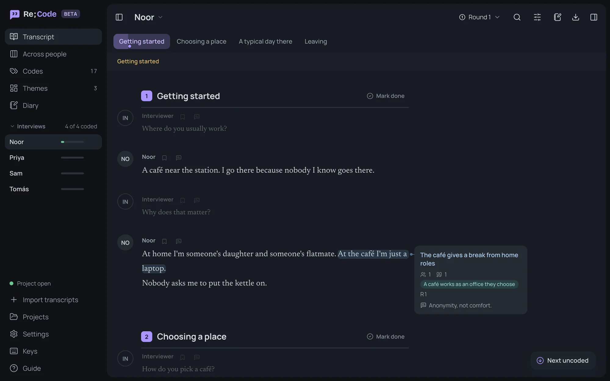
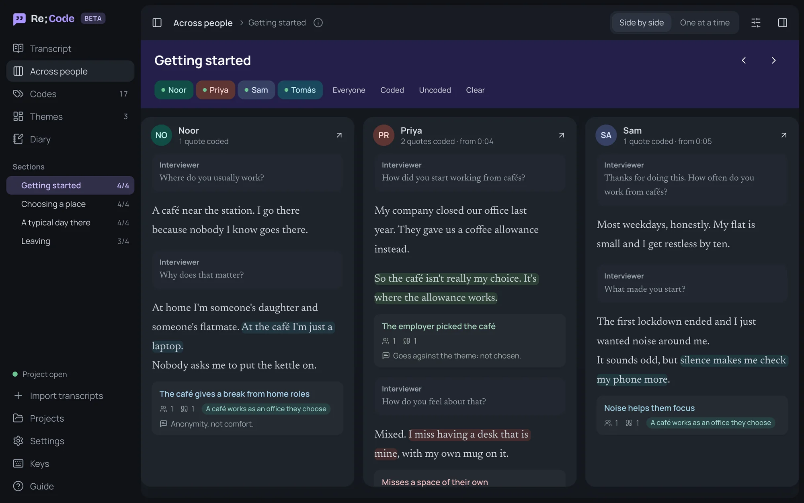
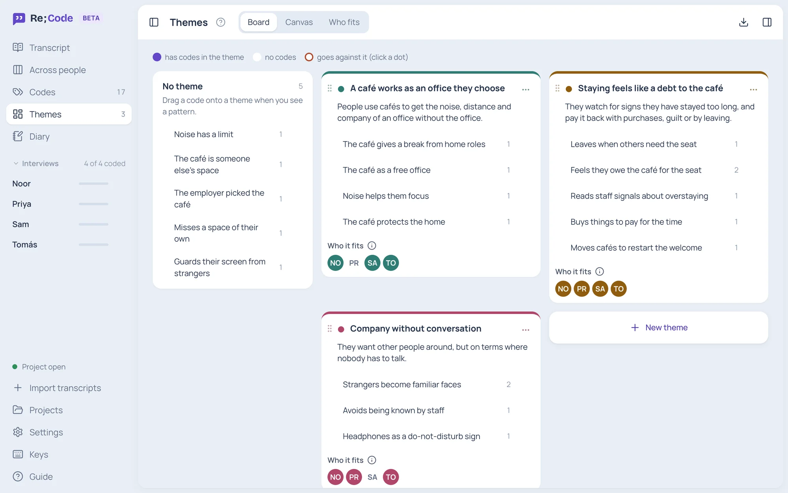
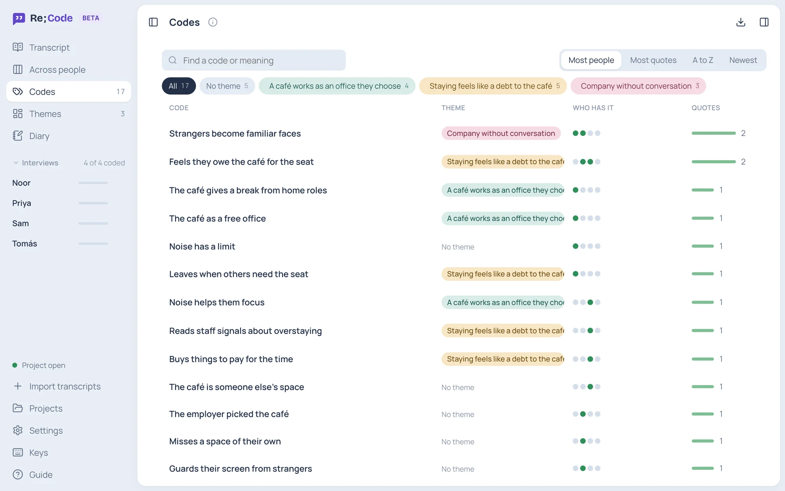

Re;Code
Re;Code
An open-source desktop app for reflexive thematic analysis. I built it to code my own Bangla-English interviews, seeing the lack of intuitive and modern tools that are easy to use and master.
The well-known coding tools are paid. The free ones are basic or dated. I wanted a free one that feels modern and is quick to learn.
- Designer and developer, my own project
- Beta, first release planned for 2027
- Mac and Windows
- Open source, MIT licence
- Code on GitHub
- Researchers learning and doing reflexive thematic analysis
- Mixed-language interviews
- Students and early-career researchers who can't pay for NVivo or ATLAS.ti
- Code in rounds, with each code beside its quote
- Build themes and see who each one fits
- Compare each section across everyone while coding
- No account and no server
- Projects are stored locally on your computer
- Works offline


What inspired me
I started it while coding the interviews for my current study, where people switch languages mid-sentence. Reflexive thematic analysis means reading closely, coding in rounds and keeping notes on your own thinking as you go. The tools I tried were either expensive, or free but hard to read and slow to learn. So I built the one I wanted to use.
1. Read one section across everyone
Themes come from patterns across people, and flipping between files loses the thread. Re;Code splits each interview by the sections of your guide. Pick a section and everyone's answers sit side by side, with their codes.

2. Themes that show who they fit
It's easy to build a theme on one vivid quote. Here you drag codes onto themes, and each theme shows which participants it fits. You can also mark who goes against it.

3. Every code, and who has it
The codes list shows each code's theme, how many people have it and how many quotes back it up. Sort by most people to see what's shared and what rests on one person.

More features
- Bring in transcriptsWord, text, Markdown, or subtitle files from Zoom, Teams and Otter. You see what it found before anything is added.
- Listen while you readLink the recording and click a timestamp to play from there.
- A reflexive diaryDated notes, tied to the transcript you were reading.
- AccessibilityPick a reading font, one of four text sizes and the line spacing, in Day or Night. It follows your computer's reduce-motion setting.
- Keyboard shortcutsMost things have one, so coding stays quick.
- ExportCoded quotes, themes and the diary as CSV files.